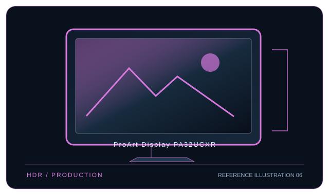

[ INDIVIDUAL COMPONENT // DISPLAYS ]
ASUS ProArt Display PA32UCXR
32-inch mini-LED 4K HDR production LCD with an integrated calibration colorimeter and Thunderbolt 4.

IDENTIFICATION: ASUS model ProArt Display PA32UCXR. Confirm the full rear-label model, region and hardware revision; published capabilities can differ by firmware, input board and bundle.
Specifications
| Catalog subcategory | Professional displays |
|---|---|
| Exact model / panel | 32-inch IPS LCD with 2,304-zone mini-LED backlight |
| Native resolution | 3840 × 2160 (4K UHD, 16:9) |
| Refresh rate | Up to 60 Hz at native resolution |
| Color gamut | 100% sRGB, 99% Adobe RGB, 97% DCI-P3 and 87% Rec.2020 (manufacturer stated). |
| Calibration features | Integrated motorized flip colorimeter enables monitor self-calibration; ProArt Calibration writes profiles to the display. Factory-calibrated color accuracy is specified by ASUS; confirm the report for the unit. |
| Inputs / companion ports | Thunderbolt 4 × 2 (up to 90 W power delivery), DisplayPort 1.4, HDMI 2.0 × 2, USB hub and headphone output. |
| VESA / mounting | 100 × 100 mm VESA mount. |
| Power | AC 100–240 V, 50/60 Hz; average consumption under 46.62 W, standby under 0.5 W (manufacturer technical specification); USB-C/TB4 supplies up to 90 W to a host. |
Compatibility and deployment
4K/60 Hz video is available over DP, HDMI or Thunderbolt 4. For one-cable host use, the computer must support Thunderbolt 4 or USB-C DP Alt Mode as applicable; host charging is capped at 90 W. HDR peak luminance and mini-LED local dimming depend on compatible source output and mode.
Preservation notes
Record the complete rear-label SKU, serial/date code, installed firmware and options, calibration report, supported signal timing, tested source and cable, mounting hardware, regional AC rating and image condition. Keep the original hood/stand and model-specific setup documentation with the display; use trained service personnel for internal work.
Manufacturer documentation and references
- ASUS — PA32UCXR technical specificationsManufacturer product or specification reference for model identification and published capabilities.
- ASUS — PA32UCXR support and manualsManufacturer support, user guide or product-specific documentation.